Working Memory, Mathematical Anxiety
Multiple linear regression
Math Anxiety
Search the determinants of math performance
Step 1: Install and load the packages
pacman::p_load("broom","ggpubr","tidyverse","readr")Step 2: Load the data into R
# Load the database
data_math <- read.csv("data/WMAth data.csv")Step 3: Explore outcome variable (must be numeric)
We checked if the independient variables (VI) are numeric
glimpse(data_math)Rows: 116
Columns: 8
$ age <int> 42, 23, 23, 21, 23, 22, 31, 24, 27, 23, 27, 24, 25, 26, 24…
$ Opposites <int> 19, 31, 29, 29, 31, 31, 37, 44, 66, 56, 40, 30, 19, 28, 46…
$ Nspan <int> 27, 48, 40, 46, 46, 42, 41, 46, 47, 38, 41, 32, 38, 46, 42…
$ Colors <int> 5, 9, 6, 9, 9, 7, 6, 5, 11, 10, 3, 7, 11, 7, 14, 8, 12, 7,…
$ PSWQ <int> 49, 53, 77, 74, 51, 49, 64, 28, 69, 43, 52, 53, 41, 54, 38…
$ MARS <int> 89, 53, 95, 109, 80, 92, 121, 47, 102, 67, 81, 108, 116, 6…
$ Fluency <int> 101, 151, 120, 119, 115, 112, 83, 154, 155, 104, 148, 90, …
$ Calculation <int> 18, 33, 36, 29, 33, 23, 16, 40, 27, 32, 31, 20, 29, 35, 28…#Independent variables
#Opposites: Verbal Working Memory
#Nspan: Verbal Working Memory
#Colors: Visuospatial Working Memory
#PSWQ:The Penn State Worry Questionnaire, 16-item, 1-5 Likert
#MARS:The mathematical anxiety rating scale, 30-item, 0-4 Likert
#Dependent variables
#Fluency:Math Performance Assessment.
#Calculation:Math Performance Assessment.Step 4: Make sure data assumptions
A. Linearity
# Influence of Working Memory
plot(Calculation ~ Opposites + Nspan + Colors, data = data_math)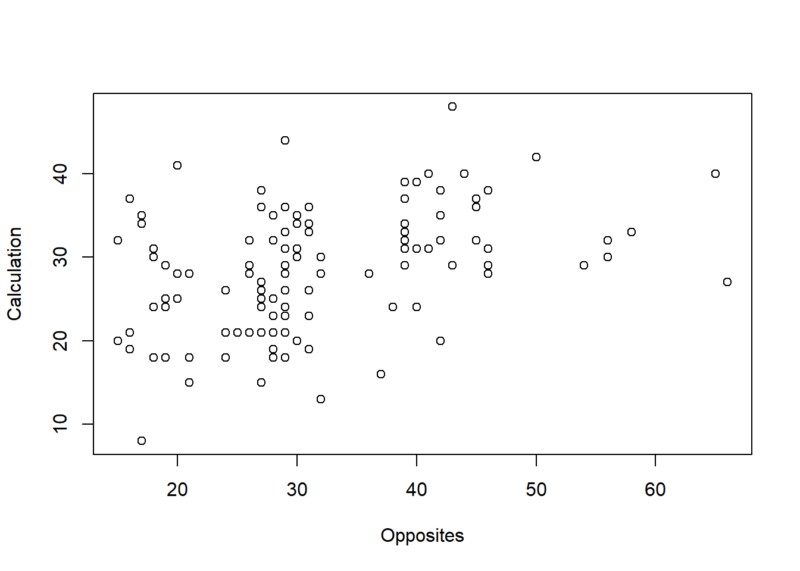
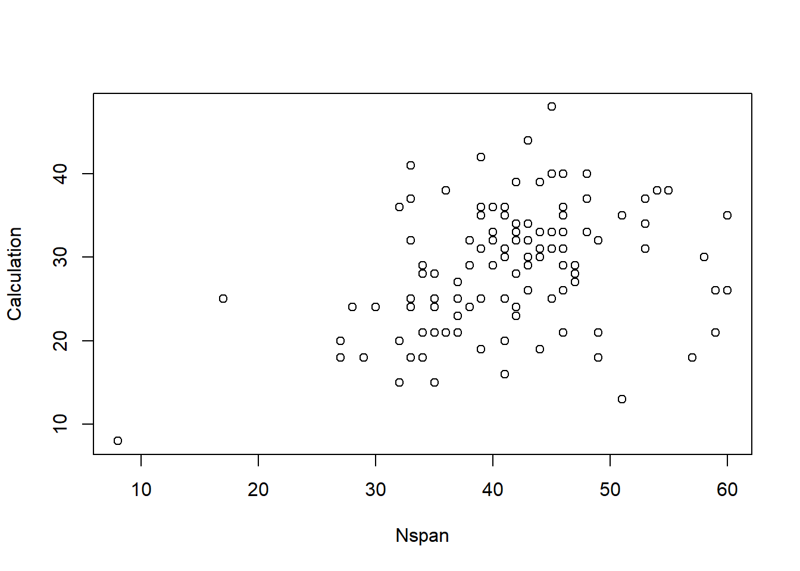
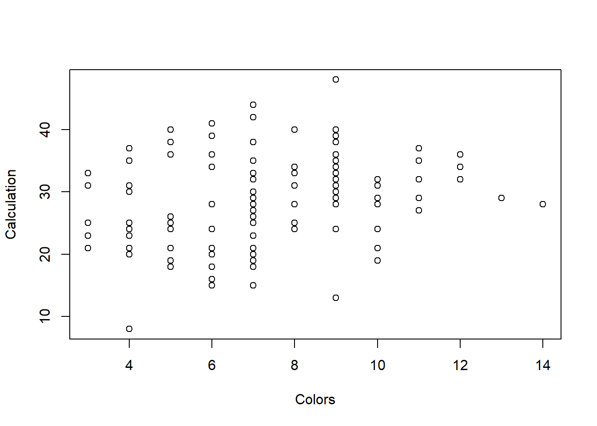
# Influence of Math Anxiety
plot(Fluency + Calculation ~ MARS + PSWQ, data = data_math)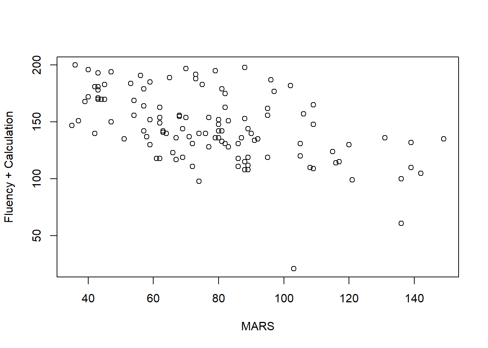
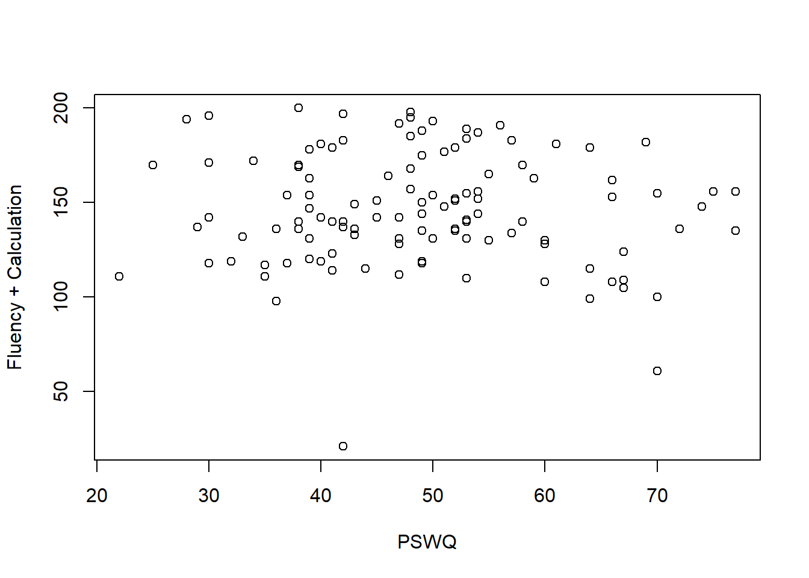
B. Independence of observations
Teoricamente se entiende que las variables son independientes
library(car)Loading required package: carData
Attaching package: 'car'The following object is masked from 'package:dplyr':
recodeThe following object is masked from 'package:purrr':
some#correlation
cor(data_math$Calculation, data_math$MARS)[1] -0.4866136cor(data_math$Calculation, data_math$Opposites)[1] 0.3959613cor(data_math$Calculation, data_math$Nspan)[1] 0.3183924#variance inflation factor
vif(m_rendimiento_lm) MARS Opposites Nspan
1.110124 1.105262 1.169471 C. Normality
#Independent variables
#Verbal Working Memory
hist(data_math$Opposites) 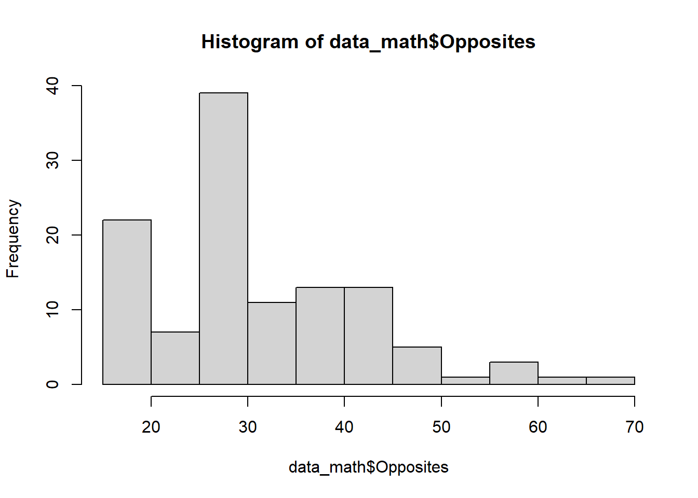
hist(data_math$Nspan)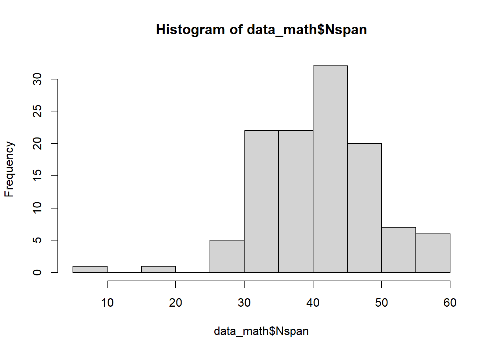
#Math Anxiety
hist(data_math$MARS)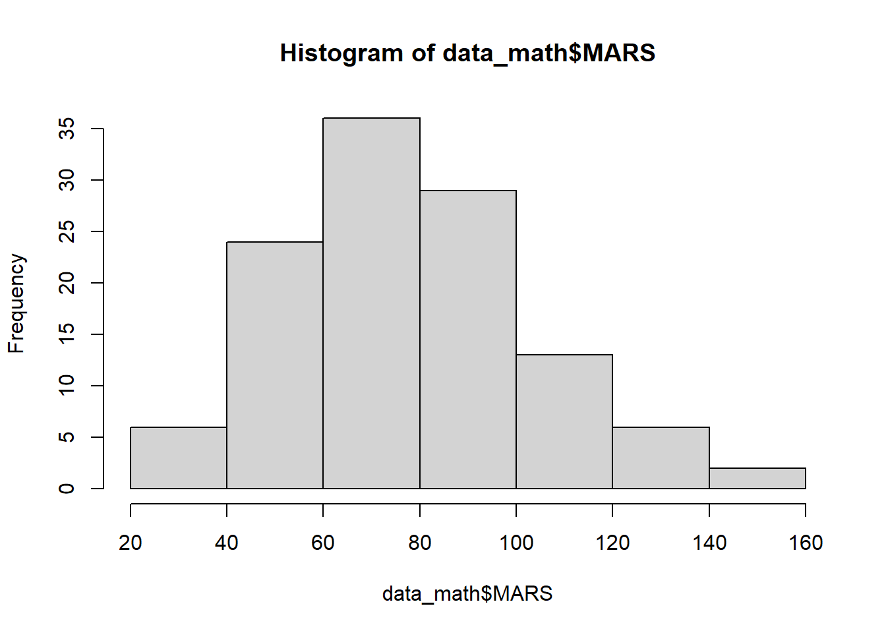
#Independent variables
hist(data_math$Fluency)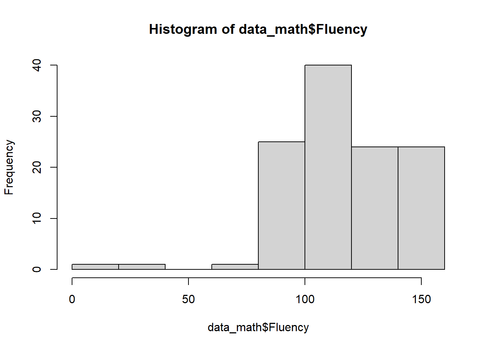
hist(data_math$Calculation)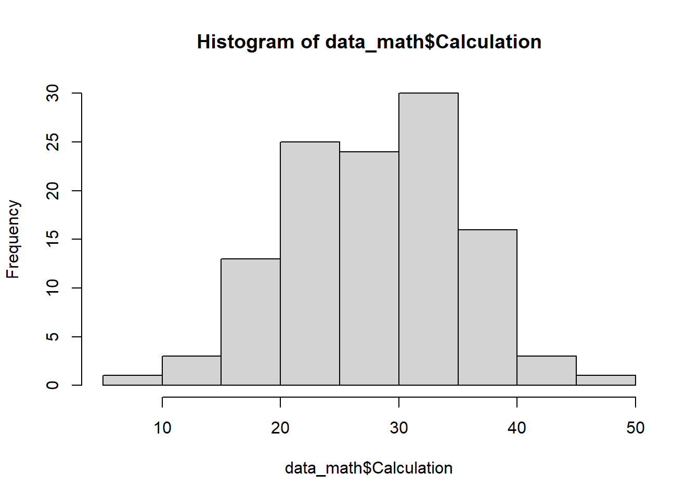
# Se puede evaluar la normalidad por QQplot, KurtosisStep 5: Perform the linear regression analysis
m_rendimiento_lm <- lm(Calculation ~ MARS + Opposites + Nspan, data = data_math)
summary(m_rendimiento_lm)
Call:
lm(formula = Calculation ~ MARS + Opposites + Nspan, data = data_math)
Residuals:
Min 1Q Median 3Q Max
-14.6986 -4.7717 -0.6258 4.5865 19.0717
Coefficients:
Estimate Std. Error t value Pr(>|t|)
(Intercept) 26.80750 4.04794 6.622 1.28e-09 ***
MARS -0.11188 0.02265 -4.940 2.75e-06 ***
Opposites 0.19403 0.05426 3.576 0.000516 ***
Nspan 0.10409 0.07362 1.414 0.160182
---
Signif. codes: 0 '***' 0.001 '**' 0.01 '*' 0.05 '.' 0.1 ' ' 1
Residual standard error: 5.982 on 112 degrees of freedom
Multiple R-squared: 0.3448, Adjusted R-squared: 0.3273
F-statistic: 19.65 on 3 and 112 DF, p-value: 2.642e-10Step 6: Check the homocedasticity
par(mfrow=c(2,2))
plot(m_rendimiento_lm)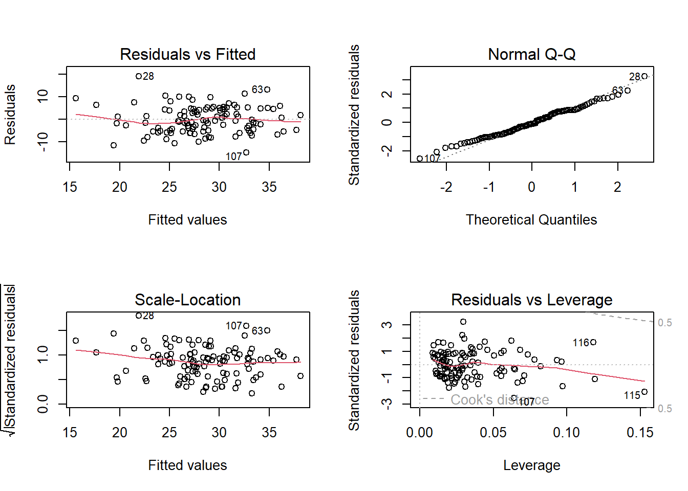
par(mfrow=c(1,1))Step 7: Perform a graph to visualize the results
print(m_rendimiento_lm)
Call:
lm(formula = Calculation ~ MARS + Opposites + Nspan, data = data_math)
Coefficients:
(Intercept) MARS Opposites Nspan
26.8075 -0.1119 0.1940 0.1041 # Get the Intercept and coefficients as vector elements.
cat("# # # # The Coefficient Values # # # ","\n")# # # # The Coefficient Values # # # a <- coef(m_rendimiento_lm)[1]
print(a)(Intercept)
26.8075 Xedad <- coef(m_rendimiento_lm)[2]
Xprom <- coef(m_rendimiento_lm)[3]
print(Xedad) MARS
-0.1118795 print(Xprom)Opposites
0.1940296